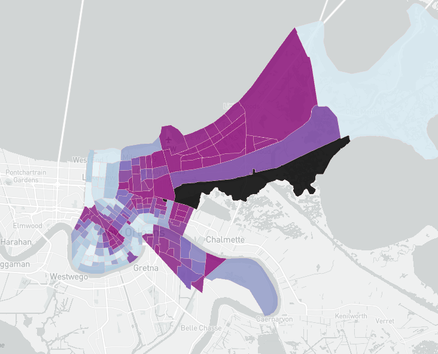
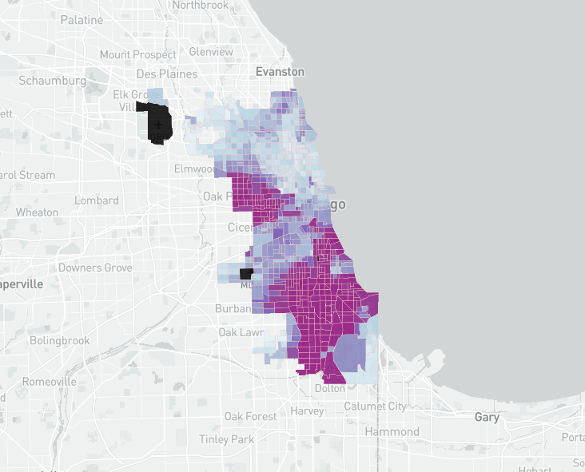
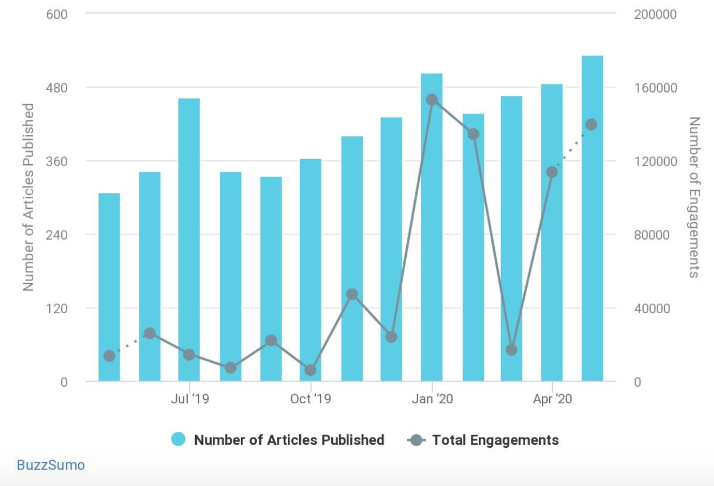

The impact of global crises has historically been unbalanced and disproportionate. During the housing crisis of 2008, lower-income and minority households bore the brunt of the economic impact, which resulted in the widest wealth gap between white and black families since 1989. Underprivileged Americans are still dealing with the ramifications of this fallout. But today they must also brace for a new, more unexpected crisis.
What does today’s global pandemic mean for America’s minorities? How have they already been affected by the virus and how can we expect their lives to change in the future? Although we are now aware of the damages of the 2008 economic recession, the repercussions of the current global pandemic are still unknown. The short-term impact the virus has had is difficult to surmise given the lack of reliable data available regarding the number of infected Americans and their racial/ethnic composition. For the long-term, we can only use the data available currently and historical examples, such as the 2008 crisis, to make projections.
In their critique of racial formation theory, Feagin and Elias (2013) describe the "dominant white frame" as "created to rationalize and buttress the oppressive hierarchy and related societal structures of systemic racism." Today, as we live through a global pandemic that has and will continue to exacerbate existing social and economic inequalities, it is impossible to understand media coverage of the crisis outside of this framework. In article after article, headline after headline, news organizations depict the connections between racism and Covid-19 within a white racial frame that ignores the racist institutions and systems that existed before this crisis appeared.
This project aims to reframe discussions about racism and Covid-19 by showing how four aspects of the conversation - underlying health conditions, white supremacy online, access to public and private space, and racial data - can be best understood with guidance from critical race theorists. While some news organizations have rightly noted that we should not discuss race and coronavirus without contextualizing it in the history of white supremacy and institutional racism, we believe this broader reframing is necessary.
“Without racial data, we can’t see whether there are disparities between the races in coronavirus testing, infection, and death rates. If we can’t see racial disparities, then we can’t see the racist policies behind any disparities and deaths. If we can’t see racist policies, we can’t eliminate racist policies, or replace them with anti-racist policies that protect equity and life.” -Ibram X. Kendi in The Atlantic
As Kendi notes, racial data is a necessary step toward closing the racial disparities in Covid-19 infections and deaths. But as of 14 April 2020, the CDC reported that only 22% of Covid-19 cases reported in the US specified the race of the patient. (https://www.cdc.gov/coronavirus/2019-ncov/cases-updates/cases-in-us.html). The Covid-19 Tracking Project has begun an initiative to both gather this data and understand which places in the country have released this information. We have collected this data as April 30. Use the interactive map below to see which states have released racial breakdowns in cases and deaths. Click on a state to view more detailed information.
COVID-19’s spread across the United States poses a serious health risk to everyone in the country. However, some are more likely to contract the virus than others and many are more likely to die due to its complications. While there are many factors that put an individual at greater risk of suffering from the disease, the presence of comorbidities is one of the powerful indicators of COVID-19 related complications that significantly increases the chance of death. As of April 8th, 78% of all people who entered into intensive care for coronavirus in the US have had an underlying condition: 32% had diabetes, 29% had heart disease and 21% had chronic lung disease. These diseases cause the most complications when comorbid with coronavirus.
These diseases are also disproportionately found among black communities. According to the US Department of Health and Human Services, “African American adults are 60% more likely than non-Hispanic white adults to have been diagnosed with diabetes by a physician”. They also found increased rates of high cholesterol, hypertension, and heart disease among black patients, statistics that some have attributed to African Americans themselves. The reason for this difference is not explained by a natural propensity of blacks to eat foods with more carbs and sugars, but by a myriad of explanations that result from institutional structures. Low socio-economic status and low educational level are two factors that may lie at the heart of explaining these data. At the end of the day, black Americans are more likely than white Americans to face serious health problems as a result of COVID-19.
The disproportionate effect of coronavirus on the black community as a result of comorbidities can be seen in the lopsided death count. While there are few states publishing data on race and ethnicity among those that they treat, the states that have shown these data reveal astonishing racial discrepancies.
In Chicago, reported in early April, 72% of people who died of coronavirus were black, even though blacks only make up one third of the city’s population. Among them, the majority had underlying health conditions. In fact, 81% of them had “hypertension, or high blood pressure, diabetes or both”. These comorbidities are both the most dangerous to coronavirus patients as well as some of the most prevalent diseases within the black community. In Georgia, the racial disparity is similar: White people account for 58% of the population but only represent 40% of confirmed cases, as of April 17th. In Michigan, African Americans account for 33% of cases and 41% of all deaths despite representing only 14% of the state’s population. Wisconsin, where the life expectancy of African Americans is 14 years shorter than that of whites, has seen black Milwaukee residents make up half of the city’s confirmed cases and 81% of its deaths. Blacks represent 26% of the city’s population.
The pattern is similar in every major city and state that has tracked the racial breakdown of those infected with the virus, revealing a shocking disparity in deaths between black and non-black Americans. Since there is still very little known about the virus and the path of its spread, some may argue that the lopsided number of deaths between races is not due to the comorbidities that African Americans disproportionately suffer from. While no data draw a proven link, we believe the correlational evidence is strong enough to suggest a connection. At the very least, this matter needs to be investigated further.
Beyond being more prone to experiencing coronavirus more severely due to comorbidities, African Americans also face barriers in the healthcare system that disadvantages them from receiving equitable treatment. Tressie McMillan Cottom addresses the issue of racial biases in the health care system through a personal, heart-wrenching story of her visit to the hospital as she was in labor. Despite being in labor for three days and pleading with doctors for hospital admission throughout, her words were not taken seriously and she was even scolded for “not letting them know sooner”, after it was eventually discovered she had two tumors in her womb alongside her baby. Her daughter died shortly after birth. Like millions of women of color, she says, “the healthcare machine could not imagine me as competent and so it neglected and ignored me until I was incompetent.” She asserts that racial biases embedded in the health system result in disparate outcomes.
The World Health Organization estimates that black expectant and new mothers in the United States die at the same rate as women in developing nations like Mexico and Uzbekistan. Black women in the United States die of pregnancy related causes at a much higher rate than white women in the US. Black babies, too, are more likely to die within two years of birth than white babies. Why do these discrepancies exist? Cottom recognizes that examples of racialized impressions of competence abound in the bureaucratic system that controls health care services. Even though many other facets of her life could have given the impression of competence, such as her educational background, manner of speech, ownership of health insurance, wealth, etc., her blackness overcame every other aspect of her identity.
There is significant research that supports Cottom’s work. The “racial empathy gap” is a phenomenon that has been raised by various authors and researchers as they attempt to understand racial biases in the American healthcare system. Rashawn Ray has found that black patients are, on average, talked to more than listened to. US surveys have found that medical staff are more uncertain and less communicative with non-white patients than white patients. Additionally, black patients may be half as likely to receive pain medication as white patients. Cottom was refused sufficient doses of morphine to combat her extreme pain and discomfort after she was admitted to the hospital.
So, why is Cottom’s story important? Research linking racial biases felt by COVID-19 patients has not yet been conducted, but the literature clearly suggests biases may be at play in the hospitals that are currently treating these patients. We have strong evidence to support that people of color are not treated equitably in the health care system, which may be a powerful contributing factor in higher rates of deaths among women in labor and newborn babies. Could these racial biases be playing a role in the immense disparity in the death rate between black and white COVID-19 patients in Illinois, Michigan, Wisconsin, and the rest of the country? It is unlikely the current pandemic would allow us a reprieve from the racial discrimination that affects millions of black men and women in the United States every year. It is not only the tangible, easily-observed factors like comorbidities that increase any given black individual’s chance of death during the pandemic, but also the subtle, hard-to-detect biases that control the way black patients are treated.
You can hear Tressie McMillan Cottom tell her story here. Or read about it in her piece: “dying to be competent”
State lockdowns have put essential workers in the spotlight. While many were invisible before the lockdown, these workers allowed society to function while people were sheltering-in-place. The workers were at high risk for contracting COVID-19. As an Associated Press analysis shows, this “burden has been borne unevenly across gender, racial and socioeconomic lines, They are mostly women, people of color and more likely to be immigrants”.
The maps linked below use Census Data to show that areas with the most COVID-19 essential workers align with areas where people of color make up a majority of the population in New Orleans and Chicago. Using a methodology similar to the one used by the Massachusetts ACLU, we defined essential workers as:
Click the images below to view the spatial distribution of essential workers and people of color in New Orleans and Chicago.
 Is the internet raceless?
No! Whether it's for a research paper, looking up store hours, or fact checking what someone says, internet search engines have become an integral part of knowledge consumption for those who have internet access. Search engines have become so ubiquitous that “Google” was added to both the Oxford Dictionary and the Marriam Webster Dictionary in 2006. In addition to their ubiquity, the internet search engines are the primary organizational structure by which knowledge and information is organized and disseminated to society. Needless to say, they are tremendously powerful and influential.
When the internet was first created, companies touted its potential for being a genderless and raceless space (Daniels). 37 years later, this dominant narrative still exists and is rooted in the belief that search engines and algorithms are scientific and objective. Noble argues against this notion when she writes, “Google functions in the interests of its most influential (i.e. moneyed) advertisers or through an intersection of popular and commercial interests.” (Noble) Google’s prioritization of money– its goal is to make a profit after-all– means that its algorithm must cater to its commercial interest. As such, it’s important to keep in mind the subjective and biased nature of search results when using the internet.
Are white supremicists using the internet? How and why?
Yes. “I believe that the internet will begin a chain reaction of racial enlightenment that will shake the world by the speed of its intellectual conquest,” wrote former KKK Grand Wizard David Duke on his website in 1998. He was able to transition the KKK from the print-only era to the digital era. Furthermore, fellow former Grand Wizard Don Black started Stormfront in 1996, a white supremcist site that has over 300,000 users. Daniels wrties, “So we see that White nationalists, as early adopters, are constantly looking for the vulnerabilities in new technologies as spots into which their ideology can be inserted”. Their hope is to push their extremist ideas into the mainstream so their hateful ideology can reach as many people as possible. An example of their success came in the form of a meme originating from 4chan, an eclectic messaging board website where many extremists interact. In 2016, people on the website began mixing “Pepe the Frog” in with Nazi propoganda. After building an association with white supremacy, people began using the meme on mainstream platforms like facebook and twitter often without knowing where it originated. This is just one example of how effective white supremicists are at spreading their ideology online. White supremacists use the internet because it is an inexpensive and effective medium to reach a large range of people.
How is COVID-19 impacting white supremicist recruiting?
Similar to the opportunity they saw with the invention of the internet, white supremicist groups are using the COVID-19 pandemic to recruit members both on the internet and at anti-lockdown protests. White supremacists were effective at disseminating their message online before any states shut down due to COVID-19. The situation is only getting worse. As more people flock to the internet due to shelter in place orders, White supremacists groups' potential recruit pool is at an all time high. Additionally, White supremacists are using the visibility of anti-lockdown protests to spread their ideology and recruit members at protests. By appearing next to other people at anti-lockdown protests, White supremacists normalize themselves and their movement. Additionally, the protests are a good opportunity for groups to connect with people who have social or economic insecurities, groups that may be particularly vulnerable to White supremacist rhetoric. One such example of this deals with a White supremacist subgroup called accelerationlists who believe a race war will topple the federal government, and they suspect the pandemic could be the catalyst neededfor the confict. They label this expected race war “the boogaloo”– a reference to a cult favorite movie from 1984 called “Breakin’ 2: Electric Boogaloo.” According to the New York Times, “It [The Boogaloo] went through various mutations and emerged sometimes as the ‘Big Igloo’ or the ‘Big Luau.’ That is why adherents sometimes wear Hawaiian shirts, say those who track them. Many such shirts were in evidence when armed protesters stormed the state capital in Lansing, Mich., Thursday and they have appeared in rallies across the country.”
I typed Boogaloo into BuzzSumo, an online tool that allows users to find the number of articles and engagements written about a certain keyword, and found a large increase in the number of total engagements with the term starting in January:

Access to and control of space has never been race-neutral. And, just like underlying health conditions and existing economic inequality, the pandemic has merely exacerbated and deepened the racist systems that have always divided access to and control over space along racial lines in the United States.
This is true for both public and private space. Lack of access to outdoor space has always contributed to disproportionate health outcomes. Racist housing policies like redlining still divide deeply segregated cities like Chicago and contribute to higher population density and lack of access to jobs and education in communities of color. And racist policing practices have always enforced restrictions on movement and public presence in communities of color. Before the pandemic, it was irresponsible to examine the impact of any law or rule without understanding the two-tiered system of law enforcement in this country. As the development of new laws and social codes regarding social distancing, mask-wearing and movement continues, we must investigate their enforcement in communities of color to understand their true impact.
Social distancing guidelines are a primary example of a new Covid-19 policy that has laid bare the existing disparities in policing of public and private space. Take, for example, the disparity in arrests for social distancing in New York from March 17 through May 4. The New York Times reported that 35 out of the 40 individuals arrested were Black, four were Hispanic and one was white. New York politicians have raised alarm about the return of practices reminiscent of “stop and frisk.” Time has reported that over 1,000 NYPD officers were deployed to enforce social distancing on a recent weekend in New York City. With this force of police officers, it is inevitable that communities of color would face disproportionate surveillance, enforcement, and brutality. Videos and images from New York circulated online over the weekend demonstrate this exactly. While many majority-white park-goers in New York’s West Village enjoyed the sunshine without masks (and even were treated to masks being handed out by the NYPD), communities of color experienced violent enforcement of the same rules that seemingly did not apply within the same city limits.
Mask-wearing guidelines are another example of policy that is made more complex given the hyper-visibility and perceived threat of people of color and Black men in particular. Now-infamous stories of incidents related to masks show that it is (and never was) a question of who follows laws. In Philadelphia, a viral video shows a Black man pulled off a bus for not wearing a mask. In Illinois, another video shows two young Black men wearing surgical masks being followed by a police officer in a Walmart. In Miami, a video shows police handcuffing a Black doctor outside his house while packing bags and boxes and wearing a protective mask. Like other laws that have been enforced by police disproportionately on people of color, it is clear these police actions are not about conformity to guidelines. Instead, the freedom to be in public space, and conform with guidelines, are inextricably tied up in racial biases and the racist system of policing.
Recent protests calling for the reopening of America have also been a clear demonstration of the two-tiered system of enforcement in the United States. Beyond the fact that these individuals are clearly not socially distancing and many are not donning masks, their interactions with police and freedom to openly carry without repercussions is striking. One can only imagine that a similar protest composed of people of color would end with more violent actions by the police. Further, the goal of the protests, to reopen the American economy, will clearly have a disproportionately negative impact on people of color who are more likely to be ‘essential workers’ and susceptible to Covid-19. In many ways, these protests are a perfect case study in what it means to protest (in public space) for White people versus people of color.
These instances of racist policing during the Covid-19 pandemic highlights the fact that we can never speak in universal language around questions of laws, policing and enforcement. While white people may view social distancing guidelines as bothersome or inconvenient, people of color understand them to be another way for the police to oppress their communities. Thus, when we talk about Covid-19 guidelines and regulations, we must talk about their enforcement. The question must arise: why are police in charge of enforcing social distancing? While it may be unlikely to occur, changing the mode of enforcement of these guidelines would have a sizable impact on their effectiveness. Is there a possibility that this oppressive moment could lead us to new possibilities for changing the way space is policed?
In her Washington Post op-ed on white rage, Carol Anderson concludes with a study by Stanford University psychology researchers on white people’s opinion on racist policing practices. The study found that, “when white people were told that black Americans are incarcerated in numbers far beyond their proportion of the population, ‘they reported being more afraid of crime and more likely to support the kinds of punitive policies that exacerbate the racial disparities,’ such as three-strikes or stop-and-frisk laws.” While there is a lot of uncertainty about the post-Covid world, if we extrapolate the findings of this study, it is not difficult to imagine racial disparities in deaths and infections from Covid-19 reinforcing and deepening existing racist attitudes. This study suggests that white people often take racial disparities for granted rather than questioning how institutions and systems produce these outcomes.
How will we talk about race when the crisis is over? Will its spread/lingering in society be blamed on the minority populations that have seen it devastate their communities? The works of race scholars like Tressie McMillan-Cottom, Joe Feagin, and Ibram Kendi are helpful to contextualize the ways in which racial discourses can help shape dominant narratives about the role of race in society. While this moment of global upheaval may seem like an opportunity for racial progress, as we know from Kendi, any positive change will most likely be accompanied by racist progress. If there is hope for restructuring society and our racial systems, it must begin with a recognition of the role of Covid in worsening rather than producing racial disparities.